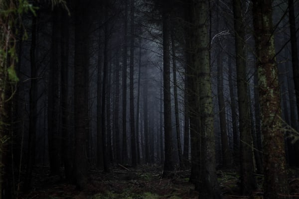

Once opened the book there was path leading back into the building the place where
Jack and originally disappeared. He started to remember that if he had stayed at home this
would have never had happened. He saw another book was dropped on the floor. He opened and
it went by ”if you opened this book, its cause the spirit has taken over. Be quick to destroy
it, and everything will be back to normal. Every single one will be gone. But in doing so you
will destroy yourself.

Thomas knew he had good intentions for Jack and started to rip the book page by page, he realised
that he is doing something good for everyone.
Suddenly, his legs started to disappear and slowly he’s whole body was gone.
Everything went back to normal as before but Jack and Thomas had disappeared and everyone was looking
for them.